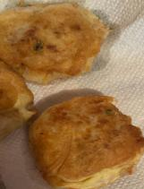

Tortitas de papa con atún
Ingredientes:
- 3 papas grandes
- 2 latas de atún
- Queso crema o manchego (opcional)
- 2 huevos
- 1 pizca de sal
- Pimienta
- Ajo en polvo
Preparación:
Se ponen a hervir las papas en una olla con agua, se dejan hasta que se suavicen, las
retiras y le quitas la cáscara, después las aplastamos en un recipiente y agregamos el atún
ya que le hayamos retirado el agua, después se le agrega una pizca de sal, pimienta y ajo
en polvo, y se forman las tortitas, agregando queso dentro de las mismas.
En otro recipiente ponemos las 2 claras del huevo, y las batimos con una pizca de sal,
después se integran las 2 yemas y se sigue batiendo hasta que esponje, una vez lista esta
mezcla de huevo, remojas las tortitas y las vas poniendo en un sartén con aceite
previamente precalentado, para freírlas. Se pueden acompañar con ensalada y arroz.